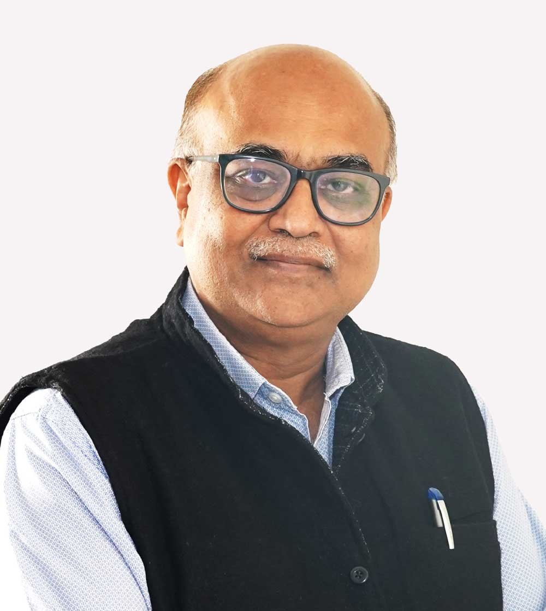

Identify strong research
We work with researchers and students to find ideas with practical value.


WIN CoE at IIT Hyderabad
Accelerating translational deep-tech innovation across Artificial Intelligence, Quantum Technologies, Semiconductors, Bioengineering, and HealthTech for national and global impact.
We work with researchers and students to find ideas with practical value.
We support early product development, testing, and technical refinement.
We connect teams with partners for field pilots and real user feedback.
We help prepare technologies for licensing, startups, and wider adoption.
Purpose
WIN CoE brings together IIT Hyderabad research strength, Wadhwani Foundation's innovation network, industry partners, and startup pathways to help promising technologies move beyond the lab.
Support for converting technical ideas into prototypes, pilots, and usable products.
Structured partnership models for sponsored innovation, validation, and scale-up.
Guidance for licensing, IP routes, field deployment, and market readiness.
Focus Areas
WIN CoE focuses on technologies that can create useful, scalable, and long-term impact.
Advancing AI models and systems with real-world evaluation paths.
Support for quantum-enabled sensing, computing, and algorithms.
From device research to fabrication-ready development.
Translational support for bioinstrumentation and diagnostics.
Supporting clinical validation and healthcare innovation.
Updates
Events, featured videos, and visual updates from WIN CoE programs and partner activities.
Upcoming Event
A focused program for researchers, students, and industry partners.
Latest Events
Regular reviews with researchers, mentors, and industry partners to accelerate prototypes.
Latest Events
Interactive sessions that help teams improve problem statements and pilot design.
Featured Videos
Gallery
Photos from WIN CoE events, sessions, and partner activities will be added here.
About Us
Simple, focused support for deep-tech teams that want to create practical solutions.
The Wadhwani Innovation Network Centre of Excellence at IIT Hyderabad supports translational deep-tech innovation across Artificial Intelligence and related domains.
WIN CoE collaborates with industry leaders to translate cutting-edge research into scalable technologies and real-world solutions.
The Wadhwani Innovation Network Centre of Excellence (WIN-CoE) at IIT Hyderabad is a translational innovation ecosystem where groundbreaking research meets industry pathways.
Our mission is to accelerate economic development in emerging economies. We believe that high-quality job creation is the most important driver of growth.
Our Team

Managing Director, WIN

Director, IIT Hyderabad

Dean ACR, IIT Hyderabad
Building collaborations and industry engagement.Head of Operations, WIN CoE
Coordinating programs and outreach.Join Us
Share a research proposal, partnership interest, pilot requirement, or industry problem statement with the WIN CoE team.
Please include the technical idea, current stage, team details, expected support, and any industry validation plans.
Contact
For partnerships, research translation, or program discussions, contact the WIN CoE office at IIT Hyderabad.